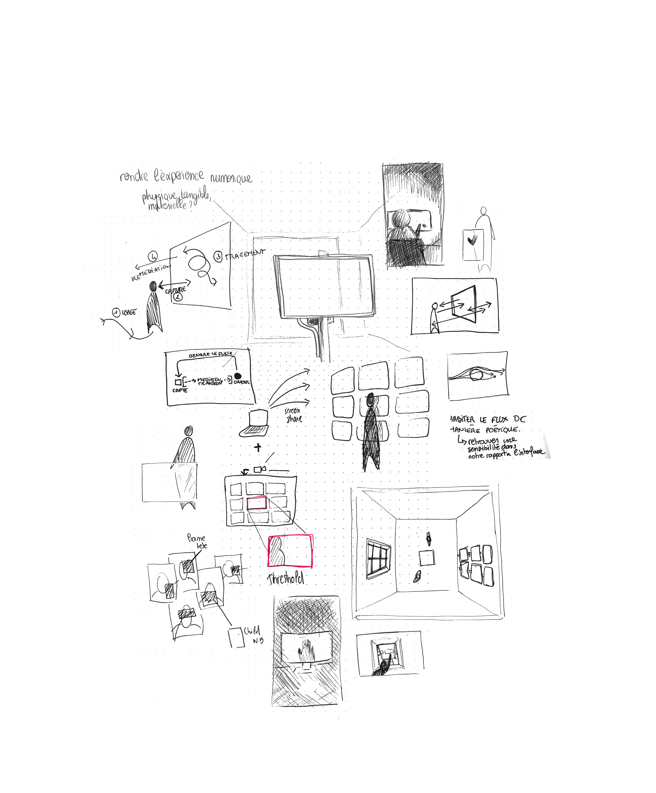

une manière de reconfigurer notre sensibilité
Formée au design d'espace à l'École Boulle, j'ai développé une approche sensible et technique de la conception, allant du design d'objet à la création d'installations immersives et de dispositifs spatiaux, où l'espace est structuré au service des usages et d'une intention. Au fil du temps, ma pratique du design d'espace se complète et se nourrit des arts numériques. Mon mémoire de Master 2 à l'Ensaama Olivier de Serre fais office de manifeste quant à la manière de repenser les espaces numériques comme de véritables lieux à habiter, à s'approprier et à investir sensiblement. Finalement, les espaces physiques et numériques s'hybrident et se prolongent pour ne former qu'un milieu immersif avec lequel on interagit.
Ces recherches s'appuient sur une maîtrise d'outils numériques tels que la 3D, la CGI, le design génératif en temps réel et les dispositifs d'interaction homme-machine, mobilisés comme un médium à part entière pour penser des formes, des usages et des spatialités hybrides. Mon travail explore la rencontre entre espaces physiques et numériques, non comme des entités opposées mais comme des environnements complémentaires, afin de concevoir des expériences sensibles, incarnées et accessibles, interrogeant nos manières d'habiter, de percevoir et de nous approprier les espaces contemporains.

L'interface n'en est que la surface visible : le seuil à travers lequel cet espace second se manifeste, toujours là, toujours actif, même lorsqu'on ne le regarde pas.
Ubiquité questionne notre rapport à ces interfaces numériques du quotidien. Douze écrans disposés sur une structure autoportante en pin forment une fenêtre à la matérialité nouvelle : un objet familier, démultiplié, initie une expérience et un rapport nouveau à l'outil numérique. Notre fenêtre virtuelle, comme la fenêtre physique, donne à voir, mais implique aussi la possibilité d'être vu depuis l'autre côté.
Une série d'images en mouvement pensée comme un prolongement du projet de diplôme.